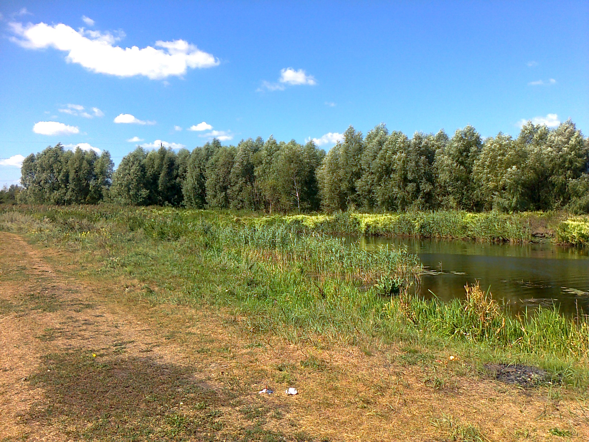
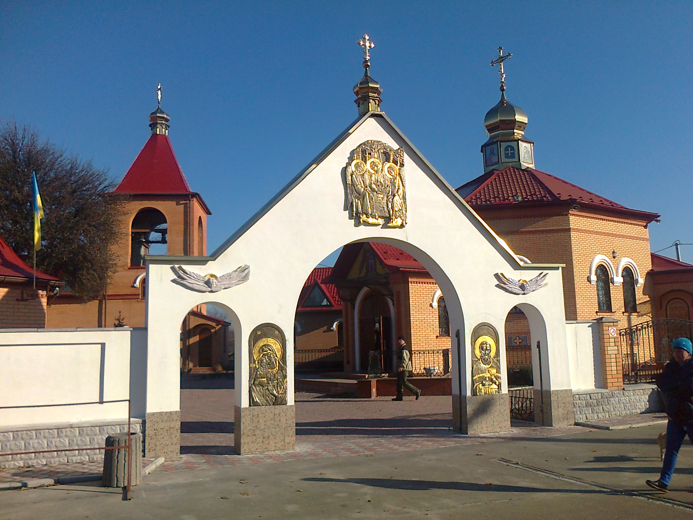
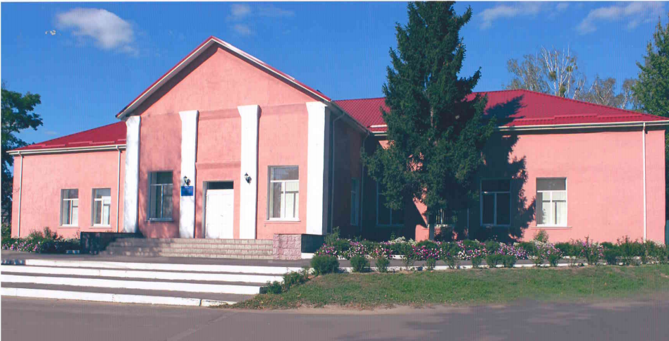
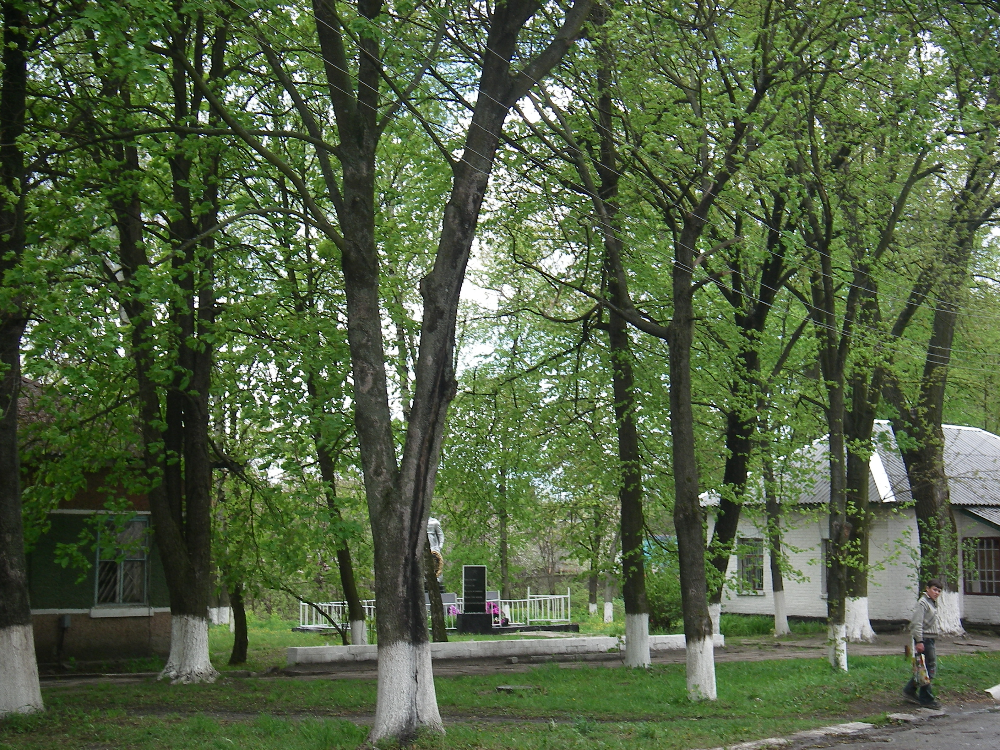

За створення фотогалерей подяка нашим односельчанам :
Дмитруку Василю Васильовичу,
Корнієвському Григорію Михайловичу
та нині покійному Милейко Юрію Васильовичу.
Дмитруку Василю Васильовичу,
Корнієвському Григорію Михайловичу
та нині покійному Милейко Юрію Васильовичу.
Пейзажі Катюжанки
Світанки
Квіти
Квіткова галерея
Осінь
Зима
Центр села
Парк в центрі
Ставок в центрі
Село зверху
Школа
Церква
Річка Здвиж
Вулиці Катюжанки
Дороги Катюжанки
Гута Катюжанська
Вул. Вишнева
Вул. Гагаріна
Вул. Заводська
Вул. Київська
Вул. Волошкова
Вул. Святомихайлівська
Вул. Вишгородська
Вул. Нова
Вул. Біла
Вул. Ранкова
Хутір
Вул. Шевченка



